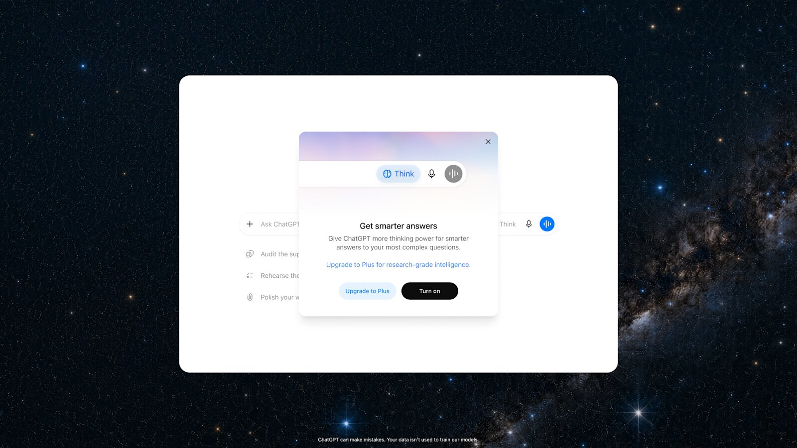

챗GPT 무료 무제한 대화, Think 버튼 쓰는 법
챗GPT 무료판 대화창에서 "오늘 대화 횟수를 다 썼습니다" 안내를 본 적 있나요? 아니면 챗GPT가 복잡한 질문일수록 더 깊이 생각해서 답해줬으면 싶었던 적은요?
결론부터 말하면 이 두 가지 다 챗GPT 무료·Go 요금제에서 이미 풀리는 중이에요. OpenAI는 텍스트 대화 무제한을 열고 있어요. 어려운 질문에 쓰는 Think 버튼도 함께 열고 있어요.
2026.08.13 기준으로는 계정마다 적용 시점이 달라요. 벌써 보이는 계정도 있고, 아직 안 보이는 계정도 있어요.
이 글은 지금 내 계정에서 뭐가 바뀌었는지 확인하는 법부터 정리했어요. Think 버튼 쓰는 법과 Plus·Pro 슬라이더 차이도 순서대로 담았어요.
챗GPT 무료 요금제, 뭐가 바뀌나요?
챗GPT 무료 요금제는 이번 업데이트로 기본 모델과 대화 한도, Think 버튼까지 한 번에 바뀌어요.
이 변화는 무료 요금제만이 아니라 Go 요금제에도 함께 적용돼요.
공식 발표는 이 버튼을 무료 요금제 화면으로 직접 보여주며 소개해요.
- 기본 모델이 GPT-5.6 Luna로 바뀌어요.
- 텍스트 대화는 무제한으로 열려요.
- 어려운 질문엔 Think 버튼으로 더 깊이 생각한 답을 받을 수 있어요.
- 파일 업로드·이미지·다른 도구는 기존 한도가 그대로 적용돼요.
OpenAI 공식 발표는 "Limits will still apply for file uploads, images and other tools."라고 밝혀요. 대화 자체는 무제한이어도 파일·이미지 도구 사용량은 예전 기준 그대로예요.
Think 버튼, 언제부터 보이나요?
무제한 대화와 Think 버튼은 2026년 8월 10일이 속한 주부터 계정별로 순차로 열려요. 기본 모델 전환은 그보다 앞서 8월 6일이 속한 주에 시작됐어요.
| 구분 | 시점 | 내용 |
|---|---|---|
| 기본 모델 전환 | 2026년 8월 6일이 속한 주 | 무료·Go 요금제 기본 모델이 GPT-5.6 Luna로 바뀜 |
| 무제한 대화 + Think 버튼 | 2026년 8월 10일이 속한 주부터 | 순차 적용, 남용 방지 가드레일 적용 |
| 이 글 확인 시점 | 2026.08.13 | 계정별로 노출 여부가 다를 수 있음 |
표: 챗GPT 무료·Go 업데이트 적용 시점 (OpenAI 공식 발표 기준)
오늘은 2026.08.13이고, 계정별로 적용 시점이 갈리는 구간이에요. 먼저 받은 계정도 있고, 아직 못 받은 계정도 있어요.
안 보인다고 문제가 있는 건 아니고, 적용 순서를 기다리는 상태일 수 있어요.
지금 확인하려면 두 가지만 보면 돼요. 대화창의 모델 표기가 GPT-5.6 Luna로 바뀌었는지, 입력창 오른쪽에 알약 모양 Think 버튼이 보이는지예요.
내 계정에서 모델 표기와 Think 버튼 노출 여부를 확인하는 화면이에요.
Think 버튼, 실제로 어떻게 쓰나요?
Think 버튼은 입력창의 버튼을 탭하면 바로 켜져요. 답을 더 신중하게 받고 싶은 질문일 때 쓰면 돼요.
챗GPT 무료 화면의 입력창 오른쪽에 새로 생긴 알약 모양 버튼이 바로 이거예요.
OpenAI가 공개한 화면을 보면, 이 버튼을 처음 누를 때 안내창이 하나 떠요.
안내창 제목은 "Get smarter answers"예요. 여기엔 Plus로 업그레이드하는 링크와 Turn on 버튼이 함께 나와요.

챗GPT 무료 버전 입력창에 새로 생긴 Think 버튼과, 처음 켤 때 뜨는 안내창이에요.
이미지 출처: OpenAI 공식 발표문 — Improving GPT-5.6 Sol in ChatGPT
- 챗GPT 앱이나 웹에서 대화창을 열어요.
- 입력창 오른쪽에서 Think 버튼을 찾아요.
- 답을 더 신중하게 받고 싶은 질문일 때 Think 버튼을 탭해요.
- 처음 켤 때 뜨는 안내창에서 Turn on을 선택해요.
- 질문을 입력하면 평소보다 시간을 더 들여 답을 생각해요.
공식 발표는 "...Free users can tap the new Think button to give GPT-5.6 Luna more time to work through the answer."라고 설명해요.
쉽게 말하면 Think 버튼을 켜면 Luna가 답을 더 오래 생각해요.
Think 버튼을 켠 뒤 답이 만들어지는 동안의 화면이에요.
Plus·Pro 슬라이더와 Think 버튼, 같은 기능인가요?
아니요, Think 버튼과 슬라이더는 서로 다른 기능이에요.
Think 버튼은 무료·Go 요금제에서 켜고 끄는 방식이에요. 슬라이더는 Plus·Pro 요금제에서 생각 정도를 단계별로 직접 조절하는 방식이에요.
Plus·Pro 요금제는 GPT-5.6 Sol 업데이트와 함께 슬라이더도 발표일인 2026년 8월 6일부터 써요. 웹·모바일·데스크톱 어디서나 된다고 공식 발표는 밝혀요.
Luna는 GPT-5.6의 성능 등급 중 가장 빠르고 가벼운 쪽이고, 이번에 무료·Go의 기본 모델이 됐어요. Sol·Terra·Luna 각 등급 차이는 아래 「GPT-5.6 Sol·Terra·Luna 차이 정리」 글에서 이미 자세히 다뤘어요.
| 상황 | 방법 | 요금제 |
|---|---|---|
| 빠르게 여러 번 물어볼 때 | 기본 상태로 그대로 사용 | Free·Go |
| 질문이 복잡해서 신중한 답이 필요할 때 | Think 버튼을 탭해서 켬 | Free·Go |
| 생각 강도를 단계별로 직접 조절하고 싶을 때 | 새 슬라이더 사용 | Plus·Pro |
표: 상황별로 Think 버튼과 슬라이더 중 뭘 쓰면 되는지 (OpenAI 공식 발표 기준)
참고로 챗GPT 유료 Work 플랜별 이용 범위는 아래 「챗GPT 워크(ChatGPT Work)란」 글에서 이미 정리했어요.
자주 묻는 질문
Q. Think 버튼을 켜면 대화가 유료로 바뀌나요?
A. 아니요, 대화가 유료로 바뀌지 않아요. Think 버튼은 무료·Go 요금제 안에서 제공되는 기능이에요. 텍스트 대화 자체는 계속 무제한이에요. 다만 남용을 막는 가드레일이 적용될 수 있다고 공식 발표는 밝혀요.
Q. Think 버튼을 처음 켤 때 뜨는 안내창에서 꼭 Plus로 업그레이드해야 하나요?
A. 아니요, 업그레이드하지 않아도 돼요. 안내창엔 Plus로 업그레이드하는 링크와 Turn on 버튼이 함께 떠요. Turn on만 눌러도 무료 요금제 그대로 Think 버튼이 켜져요.
Q. Plus·Pro 요금제 사용자도 Think 버튼을 쓸 수 있나요?
A. 공식 발표는 Think 버튼을 무료·Go 요금제 안내에서 소개했어요. Plus·Pro가 이 버튼을 쓸 수 있는지는 공식 발표에 나와 있지 않아요. 대신 Plus·Pro에는 생각 강도를 단계로 고르는 새 슬라이더가 열렸어요.
참고한 곳
· OpenAI 공식 발표문 — Improving GPT-5.6 Sol in ChatGPT (2026.08.06)
확인 시점 안내
이 글의 시점 정보는 2026년 8월 13일 기준이에요. OpenAI 공식 발표문을 직접 확인한 값이에요. 순차 적용 중인 기능이라 이후 계정별 적용 시점이나 세부 조건은 바뀔 수 있어요. 최신 내용은 위 공식 발표문에서 다시 확인해 보세요.
✔ 같이 보면 좋아요
· GPT-5.6 Sol·Terra·Luna 차이 정리 — GPT-5.5랑 뭐가 다른가요
· 챗GPT 워크(ChatGPT Work)란 — 플랜별 이용 범위
하루 정리
· 챗GPT 무료·Go는 기본 모델이 Luna로 바뀌고 대화가 무제한이에요
· 어려운 질문엔 Think 버튼을 눌러보세요, 파일·이미지 도구 한도는 그대로예요
· 무제한 대화·Think 버튼은 8월 10일 주부터 순차 적용 중이에요
· 빠르게 물어볼 땐 기본 상태로, 신중한 답이 필요할 때만 Think 버튼을 눌러보세요